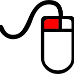

Choisissez votre méthode d’exploration :
Clavier/Souris Smartphone/Tablette Manette Xbox
|  | Pour observer autour de soi, maintenir appuyé le bouton gauche de la souris puis déplacer le curseur. |
Pour se déplacer, appuyer sur les touches de direction du clavier ou utiliser les touches ZQSD comme pour un FPS :
| Avancer | |
| Reculer | |
| Déplacer vers la gauche | |
| Déplacer vers la droite |
| OU |
| touche Z pour avancer | |
| touche S pour reculer | |
| touche Q pour se deplacer vers la gauche | |
| touche Q pour se deplacer vers la droite |
Utiliser à la fois les touches de direction et le bouton gauche de la souris pour se déplacer librement.
Les icones situées en bas à droite de l’écran sont utiles lors de vos déplacements :
| changer de caméra ( raccourci C ) | |
| plein écran ( raccourci X ) | |
| voler ( raccourci F ) | |
| marcher ( raccourci M ) |
Prêt pour la découverte? Voici la liste des mondes à explorer
Penser à utiliser le smartphone/tablette en mode paysage pour un meilleur confort de navigation.
Déplacez votre doigt n’importe où sur l’écran pour vous déplacer. Si vous souhaitez une navigation avancée utilisez les deux cercles en bas de votre écran :
^
| Pour observer autour de soi, appuyer sur le cercle oeil et déplacer le pouce droit vers le haut/bas/gauche/droite | |
| plein écran ( raccourci X ) |
Copyright © 2024 Josquin BERNARD ( deimos )